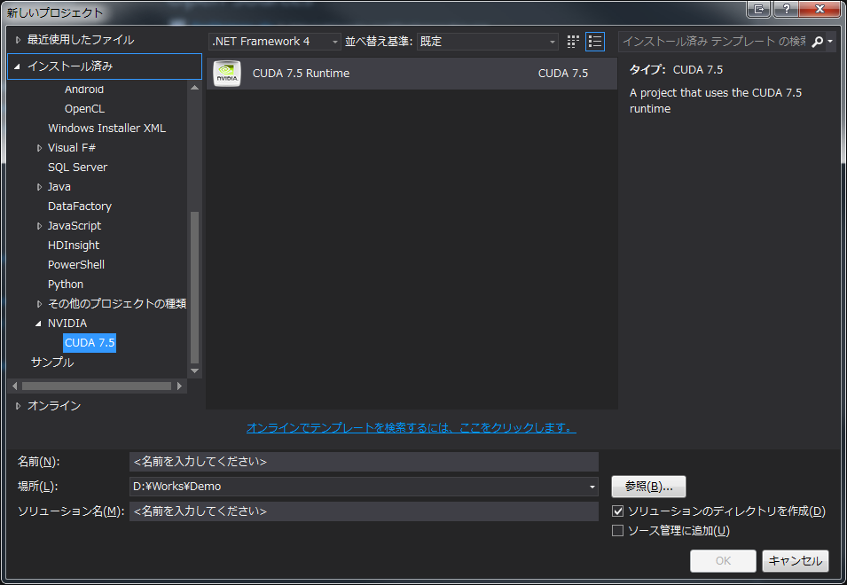
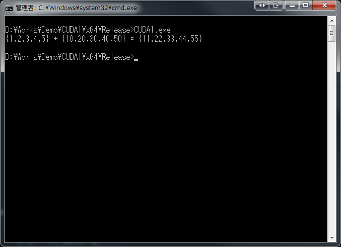

前回は環境構築をしました。
Introduction
ちょっと余所事を。 どうして.NETでGPUPUをやるかというと、WPFやWinFormsでUIは簡単に作れるからというのがあります。 別に、C++でもできなくはないでしょうが、やっぱり自分の実力も考えるとそれが妥当です。 .NETを使っていてよく言われるのが、
パフォーマンスがねぇ…
というセリフ。 そこは否定しません。NGENで最適化しようが、ポインタをフル活用しようが、どうやったって、ハードに近い部分を触れるC、C++に勝てるはずがありません。 でも開発効率はC#のが断然高いです。 どっちが優れている、というつもりもないです。 言いたいのは、どっちもいいとこどりをしたいんです。 C#側からは、時間のかかる処理はC++に任せたい C++側からは、リッチなUIをC#に任せたい というWin&Winな関係を作りたいんです。 正直、このご時世に頑なにMFCを使う理由がわからないんですよ。 デモアプリであっても。 もうちょっと見た目にも気を使ってほしいなあ。って。 といったところです。
Explanation
CUDAことはじめ
インストールが完了し、Visual Studio から 新しいプロジェクト、インストール済みを選ぶと、NVIDIA とその下に CUDA X.X が追加されています。 (2010、2012、2013のみ。2015と2008は対象外でした。)

{kind=link}
これを選択してプロジェクトを作成すると、C++のプロジェクトができ、kernel.cu というコードが表示されます。 これはサンプルのプログラムです。 まずはビルドしてみます。 バッチビルドを開くと、Win32、x64 が対象になっています。 すべて選択してビルドしてみます。 警告がたくさん出ますが、一応ビルドが通ります。 実行すると

{kind=link}
となります。 単純に、同一長のint配列の同一のindexの値同士の和を計算するプログラムです。 無事にCUDAが動いていることが確認できました。
CUDAの実力
でも、これだとCUDAがすごいのかがよくわかりません。 私の開発機、
- Intel Core i7-2600 3.40GHz
- Windows 7 Ultimate SP1 64bit
- 16.0GB
なので、最新とは言えないですが、今でもバリバリ現役です。 なので、CPUのがひょっとしたらすごいかもしれません。 なので、試してみることにしました。 サンプルの計算を10000回繰り返して、経過した時間をCUDAと非CUDA、つまりC++の普通の実装で勝負させます。 私のC++のソースが酷いのは、お察しください。 どうでもいいけど、ReSharper C++ すごいよーー！！ちゃんとインクルードが足りないと指摘してくれるよ！！しかも C++11。 こんな感じ 結果は、
CUDA惨敗
はぁ！？
Conclusion
まぁ明らかに演出な結果ですが、ここまでひどいとは思いませんでした。 当初はループ回数10000000回でしたけど、全く終わらなかったくらいですからwww 次回は原因の究明と解決を。